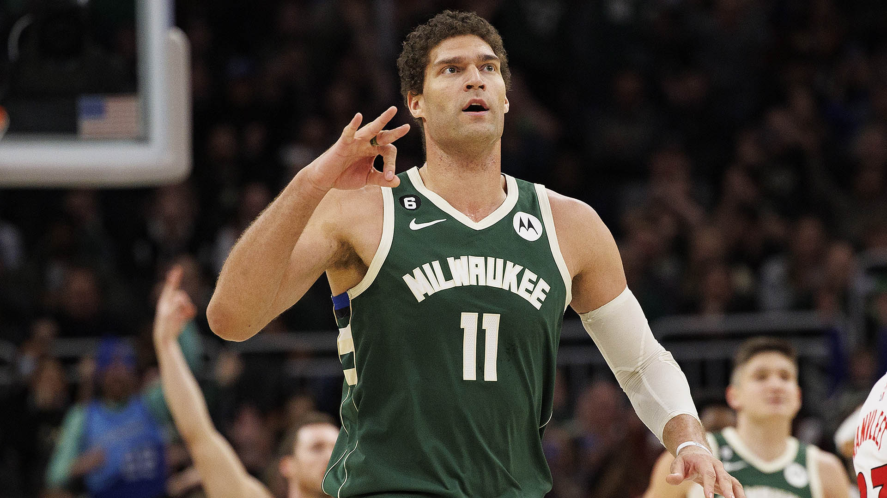
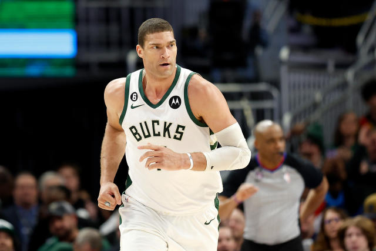
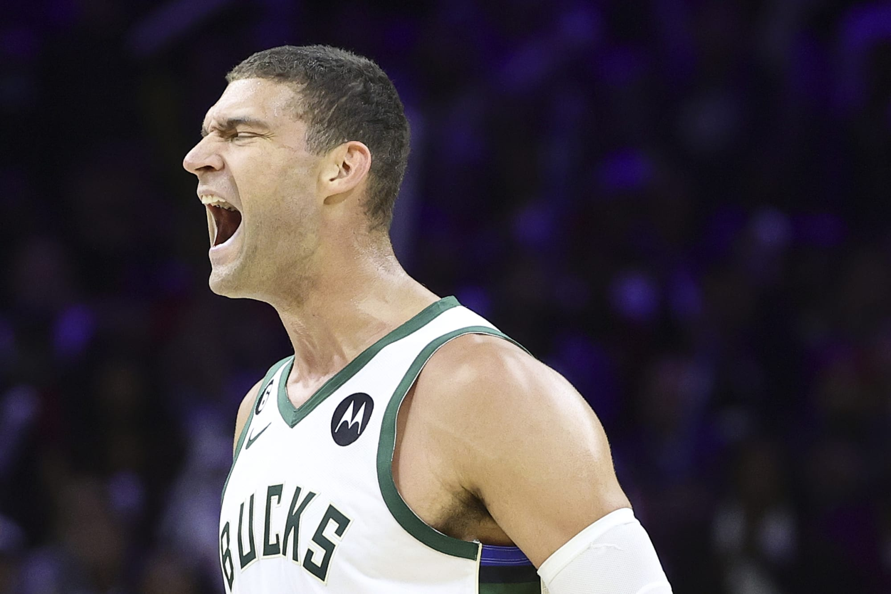
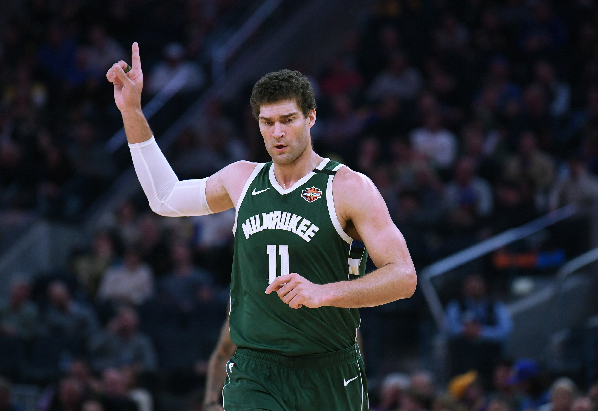
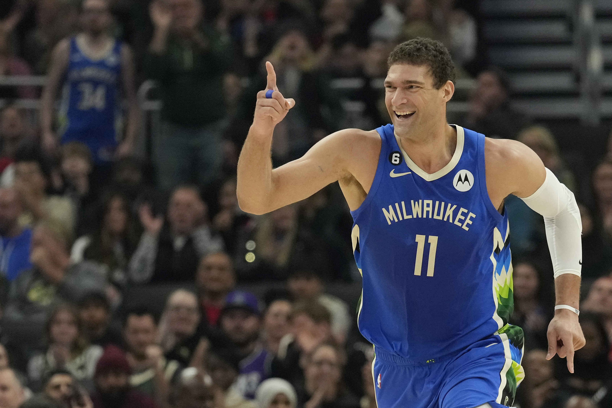

NAME:
Robin Lopez
  


Birthdate:
Brook Robert Lopez (born April 1, 1988) is an American professional basketball player for the Milwaukee Bucks of the National Basketball Association (NBA).
Salary:
NBrook Lopez signed a 2 year / $48,000,000 contract with the Milwaukee Bucks, including $48,000,000 guaranteed, and an annual average
Awards:
Brook Lopez was honored Wednesday by the NBA with the Bob Lanier Community Assist Award for the 2022-23 season.
Back